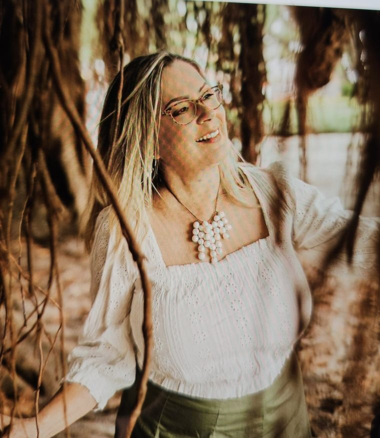
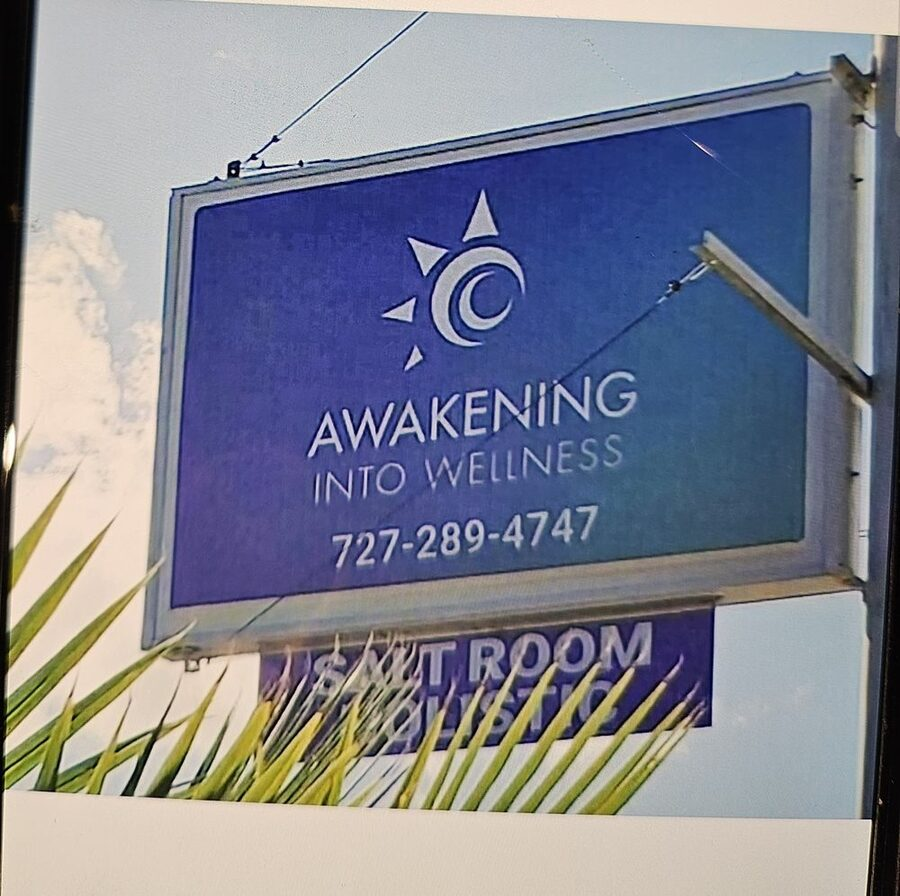
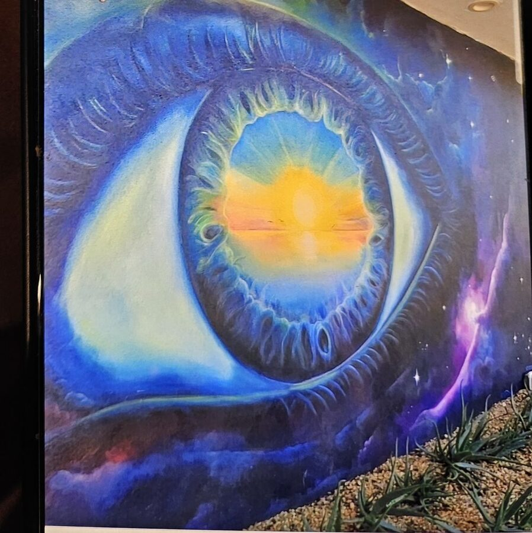
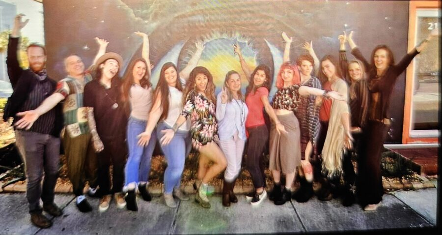
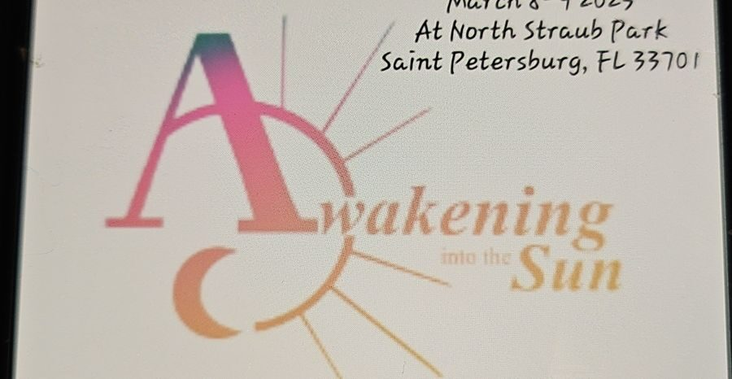
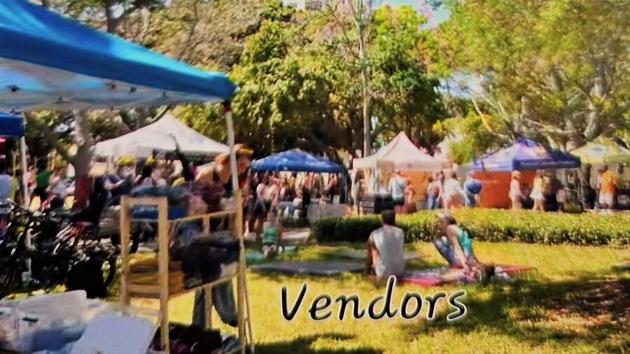

Clinical Laboratory Consultant with a career spent across chemistry, hematology, coagulation, microbiology, molecular diagnostics, and urinalysis.
Maria Carranza has spent more than twenty five years in clinical laboratory science, working across reference laboratories, hospitals, non-profit healthcare organizations, and state regulatory agencies. Her background includes hands-on inspection experience with the Florida Agency for Health Care Administration and the Centers for Medicare and Medicaid Services, giving her a clear view of laboratory operations from the bench to the inspection binder.
She holds a Florida MT license and is board certified as a Specialist in Hematology, SH(ASCP). Most recently, she served as Technical Supervisor at Integra Diagnostics, a high complexity clinical laboratory in St. Petersburg, where she led the buildout of laboratory procedures, instrumentation selection, and method validation across multiple disciplines. She now works independently as a Clinical Laboratory Consultant.

From 2014 to 2020, Maria co-owned Awakening Into Wellness, a holistic wellness studio in St. Petersburg's Grand Central District. The studio offered services including massage therapy, Reiki, and sound therapy, along with a Himalayan salt room and monthly workshops introducing the community to alternative approaches to health. The studio closed in 2020.



In 2012, Maria founded Awakening Into the Sun, an annual wellness and arts festival held each spring at North Straub Park in downtown St. Petersburg. Co-sponsored by the City of St. Petersburg, the free two-day event grew over the years to include live music, yoga, and more than one hundred local vendors, artists, and wellness practitioners.
For twelve years, Maria led the festival and its nonprofit organization, Awakening Into the Sun, Inc., a 501(c)(3), built around a simple idea: small businesses, artists, and healers thrive when a community gives them room to gather. In 2025, she passed leadership of both the festival and the nonprofit to a close friend she trusted to carry the vision forward.


Maria is available for clinical laboratory consulting work across Florida, including procedure development, instrument validation, and inspection readiness.